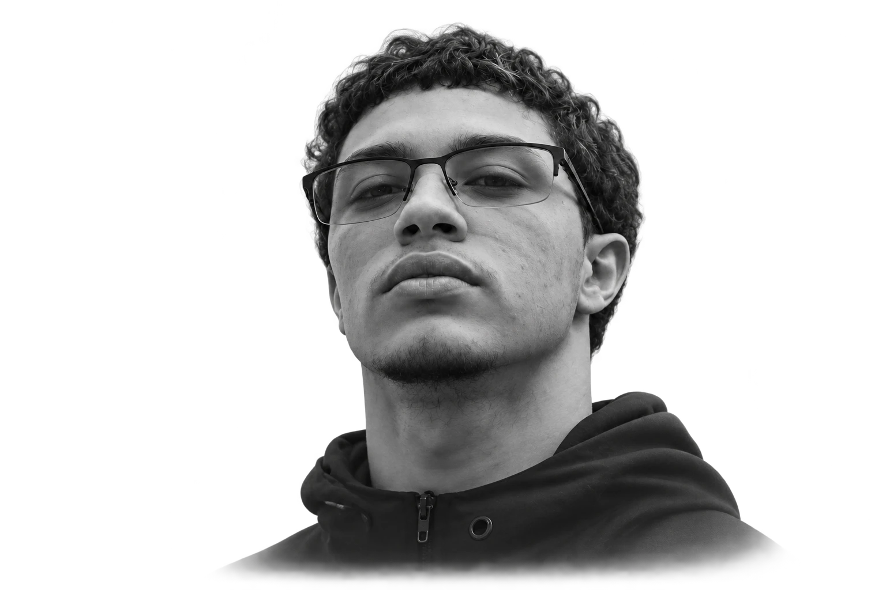

Formação técnica em Informática
Conhecimento aplicado na criação de interfaces, sistemas e aplicativos.

Minha trajetória passa pelo curso técnico em informática e pela criação de sites e aplicativos. Gosto de transformar ideias em experiências que fazem sentido para quem usa.
Continuo aprendendo por meio de projetos e certificações de plataformas como Alura, Google e Microsoft.
No Aranhaverso, explorei animação e estilização. No ListaTarefas, transformei uma necessidade da minha rotina em aplicativo. No NexusFC, atuei como desenvolvedor full stack no TCC do curso.
Estou disponível para projetos freelance e aberto a oportunidades profissionais.
Projetos que conectam estudo, prática e cuidado com a experiência.
Conhecimento aplicado na criação de interfaces, sistemas e aplicativos.
Desenvolvimento full stack para o trabalho de conclusão do curso.
Disponível para novos projetos